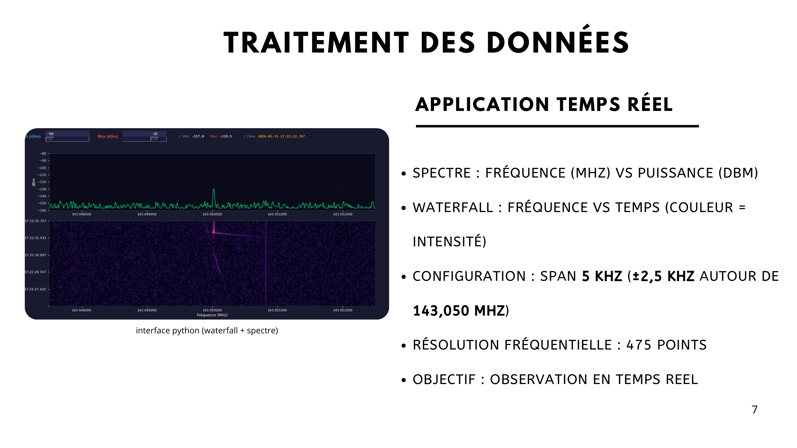

- Je détaille l'architecture de circulation des données et les interfaces entre les blocs.
- Je choisis une solution logicielle qui reste lisible, rejouable et utile pour l'analyse scientifique.
Radiodétection de météores
Projet tutoré radar GRAVES

Structurer le passage des trames jusqu'à l'interface d'analyse
Une fois l'architecture globale retenue, la conception s'est concentrée sur le flux exact des données. L'IC-705 fournit l'information spectrale, wfview la transporte via TCP, puis l'application Python décode chaque trame pour reconstruire un spectre exploitable.
L'objectif n'était pas seulement d'afficher une courbe, mais de garantir une chaîne stable entre acquisition, affichage et enregistrement. Cette exigence de continuité a guidé toute la structuration du logiciel.
Concevoir une visualisation utile à l'opérateur et à l'analyse
Avec mes coéquipiers, nous avons défini une interface temps réel centrée sur deux vues complémentaires : le spectre instantané pour repérer les niveaux et la waterfall pour suivre l'évolution temporelle d'un événement. Ce double affichage facilite la détection visuelle d'une signature Doppler et la vérification du bon fonctionnement de la chaîne.
Points de conception retenus
- Fenêtre d'observation resserrée autour de 143,050 MHz pour se concentrer sur la zone d'intérêt.
- Affichage synchrone pour que le diagnostic opérateur corresponde au contenu enregistré.
- Séparation claire entre la logique de réception, la logique d'affichage et la logique de sauvegarde.
Concevoir un format d'enregistrement vraiment exploitable

Le choix du CSV horodaté a été central car il permet de conserver les 475 points spectraux de chaque trame avec les métadonnées nécessaires. Cette décision facilite l'archivage, l'export, la comparaison et la relecture hors ligne.
La conception du lecteur associé à ce format a également fait partie du travail : si l'on veut mesurer un événement après coup, il faut que la capture soit navigable, que les instants soient identifiables et que l'opérateur puisse extraire une waterfall sur toute la durée utile.
Synthèse
Cette sous-partie m'a permis de passer d'une architecture globale à une conception détaillée du flux logiciel. Le projet tutoré reprend ici la même logique de présentation que les SAE : besoin, choix d'architecture, justification technique puis ouverture vers l'étape suivante, centrée sur les mécanismes de capture et de déclenchement.